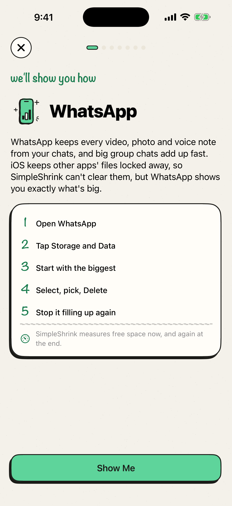

Full iPhone? shrink it, don’t delete.
iPhone Storage
almost full!
roomy again
same memories, less space
See what’s eating your space


Shrink videos, keep every one
Pro

same video, a fraction of the size
Swipe the junk away

left to delete, right to keep
Clean up other apps too

step-by-step guides, no guesswork
See what really came back


‹ Back
smaller videos, same memories
Shrink videos
Up to about 2.86 GB
Shrink all at once
4:12
IMG_4127.MOV
smart · long and sharp
1.92 GBabout −1.31 GB68% smaller
2:38
IMG_3981.MOV
smart · lots of motion
1.21 GBabout −790.00 MB65% smaller
2:51
IMG_3764.MOV
smart · long and sharp
1.18 GBabout −760.00 MB64% smaller
SimpleShrink makes a smaller copy of each one first and only swaps the ones that come out clearly smaller. Copies keep their date, location and favorite. The originals go to Recently Deleted, where you can recover them for 30 days.
‹ Back
left to delete, right to keep
Swipe to clean
1 of 24
DuplicateJun 2, 9:14 AM
2.84 MBOld screenshotMar 8, 11:20 AM
2.42 MBDELETE
Similar shotJun 14, 3:03 PM
4.07 MBKEEP
BlurryJun 14, 3:02 PM
3.10 MBDELETE


Your photos never leave your iPhone

No account
No uploads, ever
No data collected
Shrinking videos and Live Photos needs SimpleShrink Pro.
Deleting duplicates and junk is free.
Deleting duplicates and junk is free.